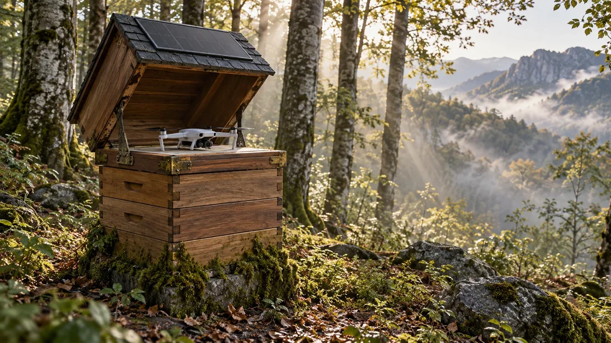
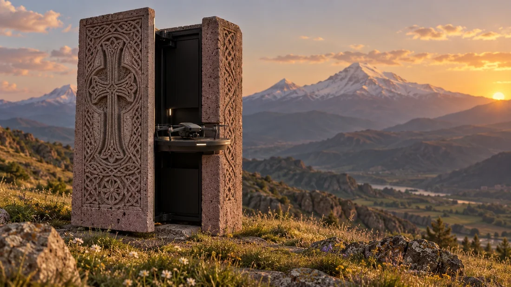
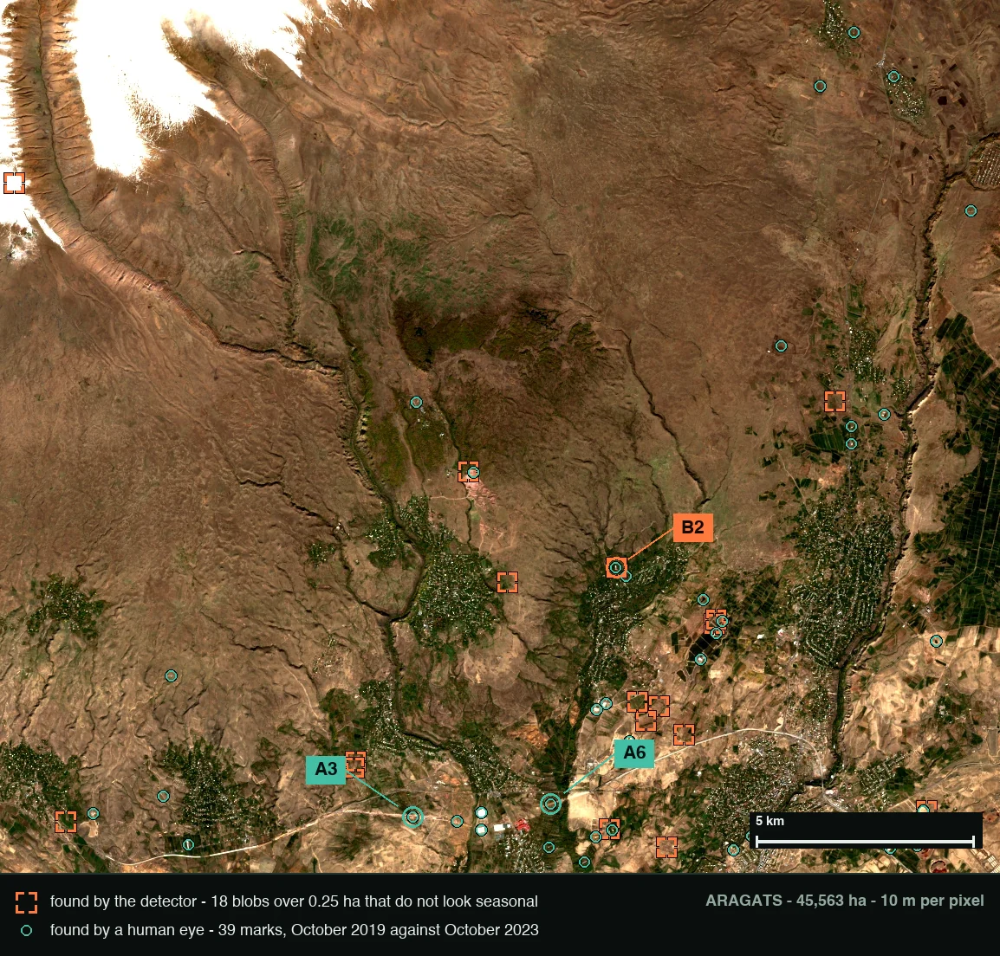
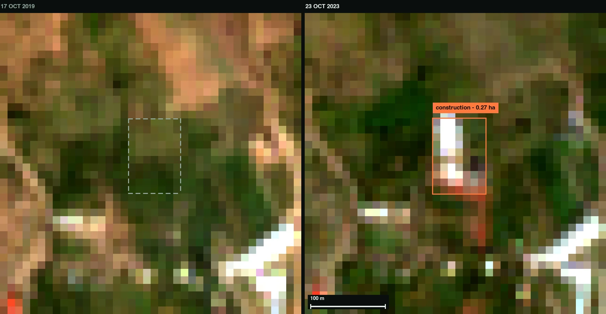

Armenia is changing faster than anyone is measuring it.
Every five days a free satellite photographs the whole country at ten metres per pixel. Nobody in Armenia reads those frames. We do — and then we send a machine to the spot to confirm what the pixels only suspected.
29,743km² of territory
5 daysrevisit, free, 10 m
0operators doing this for Armenia today
Problem 01Ground that moves
1/3
of the country sits inside a landslide hazard zone.
15%of the population lives inside it
$10Maverage damage every year
130+risk areas mapped by JICA, then left unwatched
A slope gives warning. It creeps, it cracks, the soil saturates. Those signals exist for weeks before anything collapses — they are simply nobody's job to read.
Problem 02Forest that disappears quietly
A country that was 40% forest is now under ten.
~1,000,000m³ cut illegally each year
~8,000 hathe same loss in area
22 haevery single day
Twenty-two hectares a day is two hundred and twenty Sentinel-2 pixels a day. The evidence is already being collected, for free, on a five-day cycle. It is being thrown away.
Problem 03Land used without permission
Who was allowed to dig here?
This is also where we are honest about the limit. At ten metres you cannot see a fence, a wall or one new house. You can see vegetation stripped, soil turned over, a track graded across open ground and earthworks begin — which is the moment a registry actually wants to know about, not the month the building is finished.
clearing · yesearthworks · yesquarry growth · yesgraded track · yesa fence or a wall · noa single building · no
ScopeWhat we refuse to claim
Six problems on the table. We claim three.
Agriculture is dropped on purpose. Free tools already give a farmer an NDVI map, and the competitor selling it by the square kilometre would earn 892,290 roubles for one pass over the whole of Armenia — less than two engineers cost. Flood extent is solved by free SAR; we would only be delivering it, so we say only that. If we cannot improve it, it is not on this page.
How it worksHypothesis, then proof
A satellite can raise a suspicion. It cannot testify.
Every change-detection product in the world ends at step two and hands a human a map. A map is not an answer: a lorry, a shadow, a dry August or a tile misalignment all look like change. We close the loop with a physical instrument standing on the ground — which is what makes the output admissible instead of merely interesting.
Physical AIThe ground station
An unmanned witness at 2,000 metres.
2.5×energy margin on the worst winter day
1× / yearservice visit
cmdrone resolution against 10 m from orbit
Off-grid solar, a heated drone dock, soil probes and a geodetic receiver. When orbit flags a slope or a clearing, the nearest box flies the sortie itself and returns centimetre imagery, soil state and a position fix for the same coordinate on the same day.

Forest: an apiary hive. Concept render. A beekeeper box is the one object nobody walks up to and nobody reports.

Open slope: a khachkar. Concept render. Stone shell, ordinary silhouette, the dock inside.
MarketWhere the money actually is
Money follows obligation and risk, never area.
Planet owns a constellation, books $307.7M and clears about five per cent. Cape Analytics owns no satellites at all, employs 107 people and sells a risk decision to most of the thirty largest US home insurers. Satelligence sells a legal duty — EUDR compliance — with forty-five people. Selling pixels by the square kilometre is the one model that does not work.
OpportunityThe empty row
Every cell on the Armenian row is empty.
Not underserved — unserved. And nothing in this stack is Armenian: mountains, thin budgets, a cadastre under pressure and a shrinking forest describe Georgia, Kyrgyzstan, Tajikistan, Nepal, Albania and North Macedonia equally well. Armenia is where we build it and prove it, not the size of the market.
EvidenceThis already runs
We are not starting from a slide.

Aragats · 45,563 ha, already walked. Orange corners are what the detector proposed. Teal circles are what a human confirmed by eye. Both layers are on the same district, October 2019 against October 2023.
A graded track, found at 10 m. The detector put the box within one pixel of the human mark.

Construction, 0.27 ha. Below this size we do not claim a find at all.
A labelling desk, a change detector and hand-verified finds over Aragats and Dilijan exist today. Every frame here is Sentinel-2, free and open, 10 m per pixel, every five days since 2015. What is missing is not the imagery and not the model. It is the ground.
Firebird BuildWhat we ship in 24 hours
One marz. One live alert feed. Built with Codex.
01Sentinel-2 time series pulled for one Armenian marz
02change candidates ranked, seasonality and cloud thrown out
03a human verification queue that survives a real operator
04an evidence pack a registry could act on
Twenty-four hours turns the prototype on the previous screen into something an institution can be shown: one marz, one feed, one pack of evidence per alert.
Product and operationsYerevan · founder, ten years shipping products
Geospatial engineeringInformation systems, Moscow State University of Geodesy and Cartography · ODS AI hackathon winner